Our work 68 real projects
Every photo here is from an actual project we executed in the Eastern Province, with its city, service type and execution notes. Filter by service, and talk to us about a similar project for your home.


Full exterior villa facade renovation featuring UV-resistant artificial wall grass cladding and warm architectural LED lighting in Dammam.

Bespoke reception entryway combining textured chipboard panels, fluted WPC wood slats, and a warm backlit oval mirror.

Custom-crafted TV media wall utilizing premium German-grade chipboard, marble-look UV panels, concealed wiring, and recessed LED strips.

Completed hall finishing featuring washable Jotun Fenomastic Silk paint, curved LED gypsum ceiling, and wood-look porcelain flooring in Khobar.

Contemporary bathroom renovation in Khobar finished with marble-vein porcelain, matte black concealed mixers, and a round mirror.
Column-free cantilever car parking shade featuring thermal epoxy-coated steel framing and heavy-duty beige PVC fabric.

Bespoke villa staircase renovation featuring beige marble treads, beveled skirting, gold-patina wrought iron railings, and Jotun wall finishes in Dhahran.

Custom-designed TV media wall in Dhahran combining 18mm German chipboard, fluted WPC wood slats, floating console, and warm hidden LED strips.

Complete royal majlis renovation in Al-Ahsa showcasing marble-veined porcelain slabs, multi-spot gypsum ceilings, and washable Jotun paint.
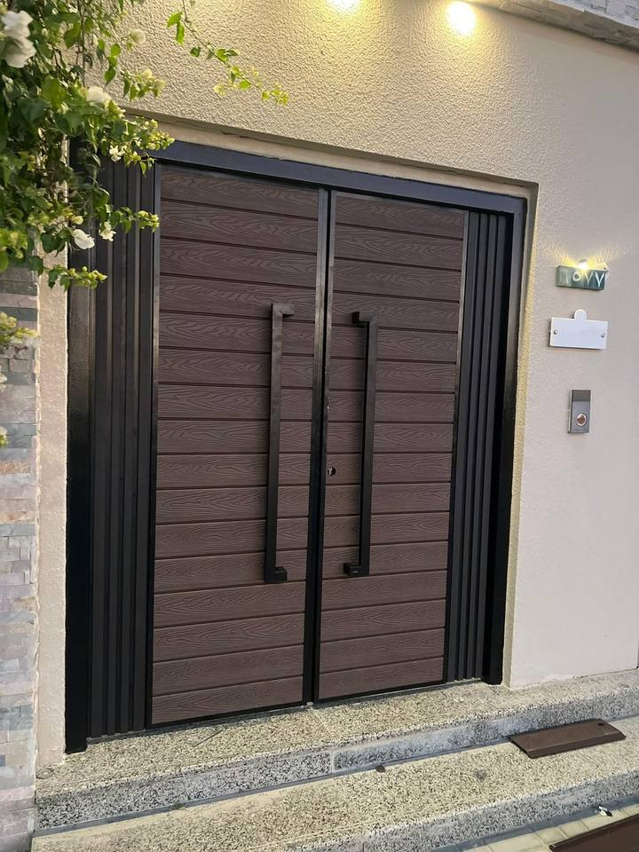
Custom heavy-duty galvanized steel villa entrance gate featuring oven-baked powder coating and weather-resistant WPC wood slats in Khobar.

Bright modern villa living hall in Khobar finished with Jotun Fenomastic pure white paint, anti-glare spotlights, and large porcelain slabs.

Custom coffered ceiling crafted with Korean WPC wood beams, recessed spotlights, and a modern LED ring chandelier in Al-Ahsa.

Washable Jotun velvet-grey wall finishes paired with smooth spray-painted crisp white interior doors.

Washable Korean and German 3D geometric wallpaper installed with invisible seams and moisture-proof adhesive.

CNC laser-cut heavy-gauge steel privacy screens and rooftop fencing coated with anti-rust metallic paint.

Full villa rooftop elastomeric waterproof and UV-reflective thermal coating system applied with seamless joint sealing in Dammam.
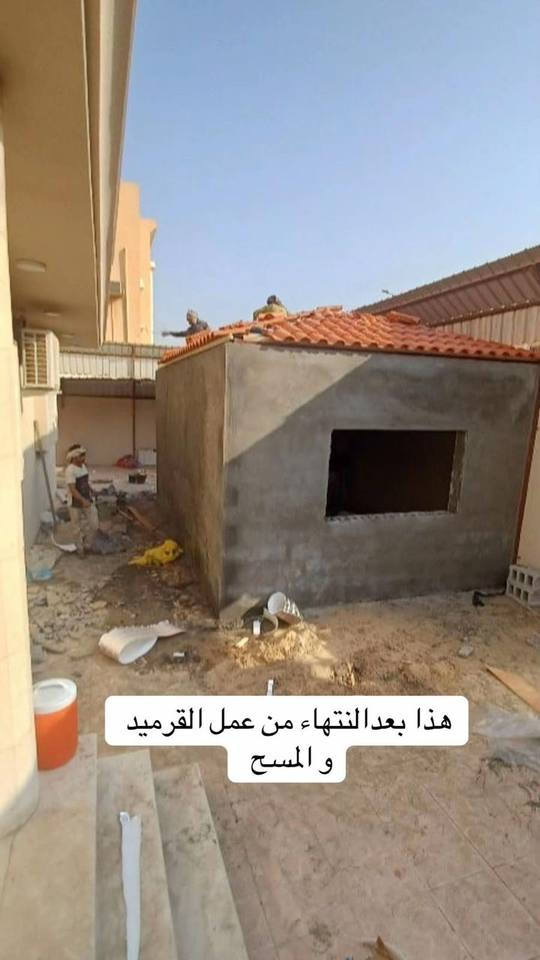
Completed exterior shell of the garden majlis annex following clay tile roofing and smooth cement plastering in Qatif.

Interior finishing of the external majlis featuring two-tier recessed LED gypsum ceilings, decorative wall molding frames, and Jotun paint in Al-Ahsa.
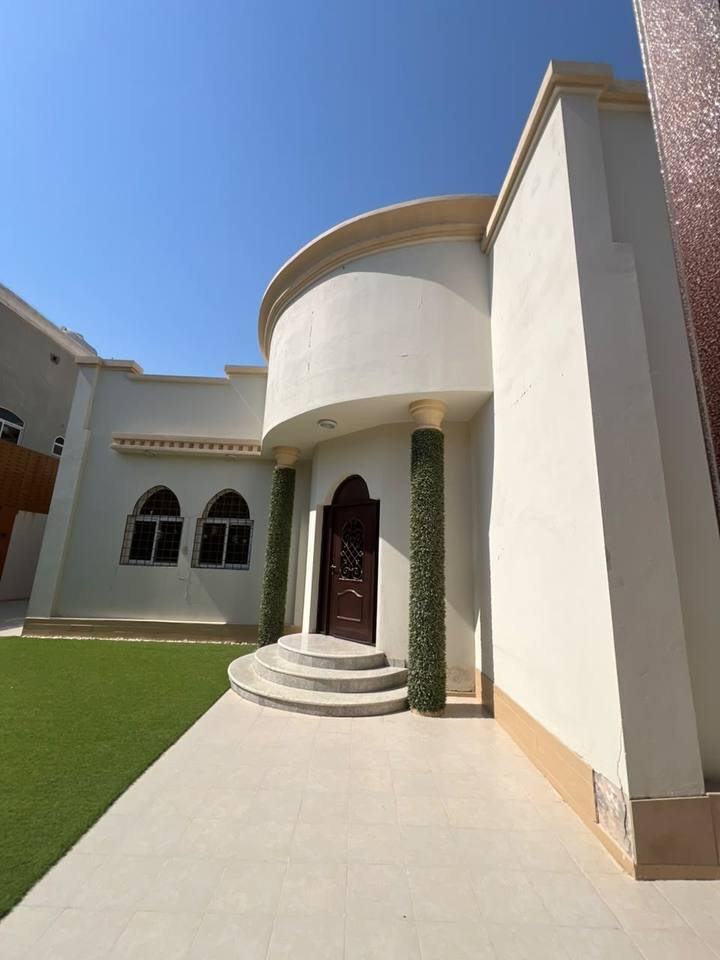
Heavy-duty anti-slip outdoor porcelain walkway installation with side planter landscaping and weather-resistant facade finishing in Khobar.
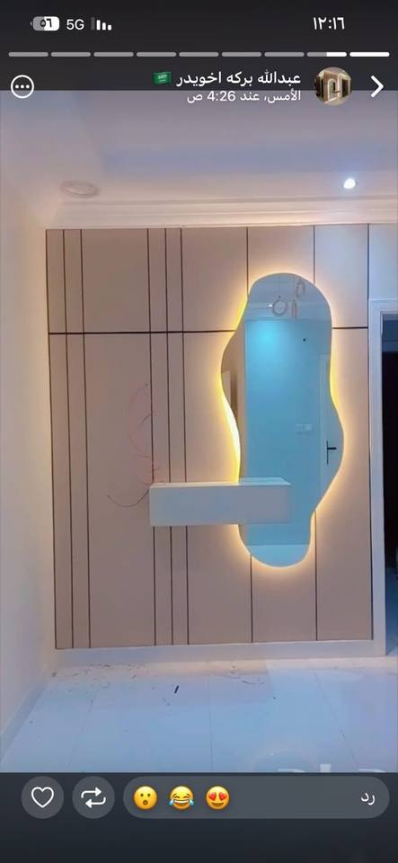
Moisture-resistant chipboard wall cladding paired with an organic freeform backlit mirror that maximizes spatial depth and luxury.

Interior decorative partition and vanity backdrop crafted from water-resistant WPC slats and high-density chipboard in Jubail.

Precision-installed main villa entryway blending warm wood slat textures with ambient perimeter LED illumination.

Three-coat Saveto putty leveling and laser-guided sanding delivering ultra-smooth corridor walls and luminous door frames.

Odor-free Zero-VOC pastel rose bedroom painting integrated with recessed gypsum board ceiling lighting and porcelain flooring.

Seamless harmony between light grey satin walls, glossy porcelain tiles, and crisp gypsum cornice detailing in Al-Ahsa.

Quarter-sheen off-white interior painting designed to maximize natural brightness and stain resistance across residential apartments.

Pure architectural white interior coating paired with geometric gypsum board ceilings and balanced spotlighting.

Contemporary two-tone charcoal and white wall scheme creating striking architectural contrast in large family halls.

Neoclassical white polyurethane foam wall molding frames installed over a refined matte grey backdrop.

Embossed velvet-texture luxury accent wallpaper tailored for formal Majlis and reception feature walls in Khobar.
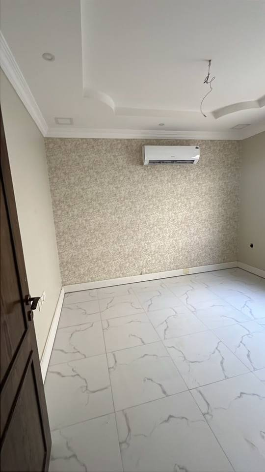
Seamless pattern-matched installation of heavyweight classic Damask textured wallpaper in Qatif.
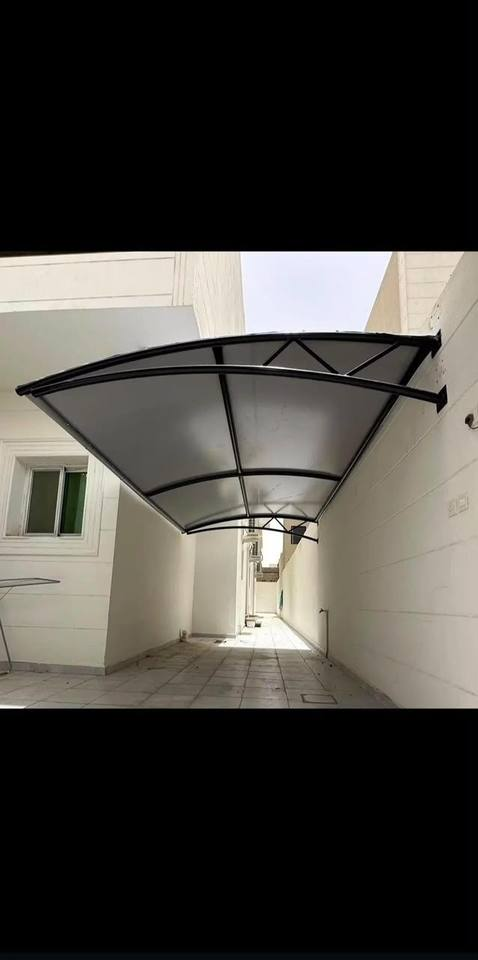
Custom arched side walkway canopy fabricated from 1100gsm Korean PVC membrane providing 100% UV and rain protection.

100% sight-blocking horizontal louvered steel privacy fence engineered for airflow and wind resistance across Eastern Province villas.

Architecturally arched villa entrance canopy shielding doorways and pathways from intense solar heat and seasonal rain.

Structural rebar doweling and concrete reinforcement for villa rooftop parapet walls prior to waterproofing membrane application in Dammam.

Interior load-bearing modification and hall expansion paired with moisture-resistant Mada green gypsum board ceiling framing in Dammam.

Precision 0.6mm galvanized steel framing and moisture-resistant green gypsum board ceiling installation for a spacious villa hall in Dammam.

Multi-coat Saveto Vetonit putty and Jotun primer preparation beneath a custom curved recessed LED gypsum ceiling in Khobar.

Three-coat putty application and laser-guided sanding for ultra-smooth wall surfaces prior to final Jotun topcoat in Qatif.

Turnkey living room finishing in warm Jotun off-white shades with recessed spotlighting and seamless wood-effect flooring in Qatif.

Large majlis renovation in Jubail completed with Jotun Fenomastic Wonderwall Lux paint, perimeter LED gypsum ceiling, and porcelain flooring.
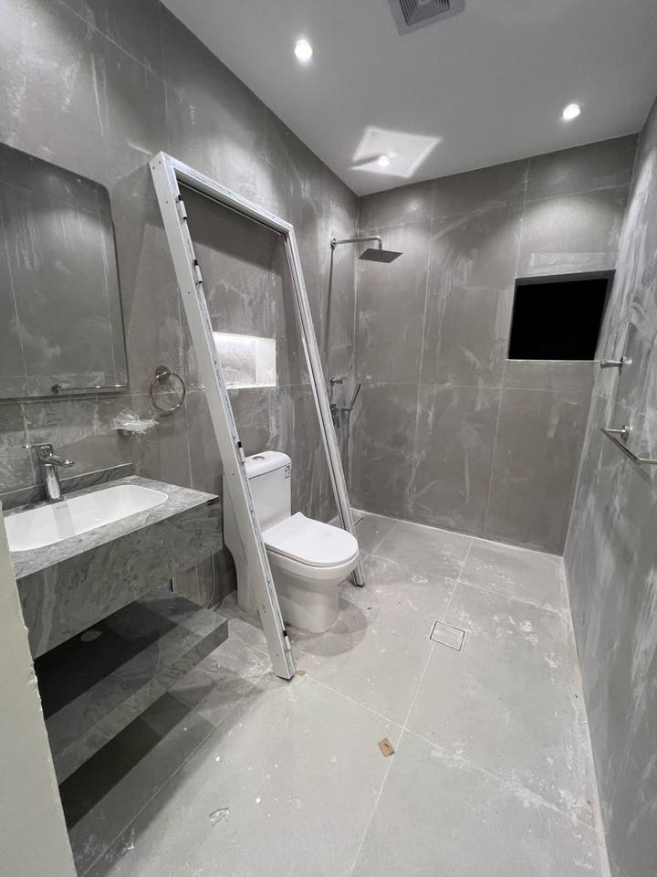
Full bathroom remodel in Dammam with PPR thermal plumbing, waterproof membrane, large-format grey porcelain tiles, and floating vanity.

Hotel-grade bathroom finishing in Dammam featuring rectified laser-cut porcelain tiles, moisture-resistant ceiling, and backlit LED mirror.

High-build seamless white acrylic and polyurethane roof waterproofing membrane installed in Khobar with a 10-year leak-free warranty.

Installation of moisture-resistant green gypsum board ceilings alongside UV marble wall panels during a villa renovation in Qatif.
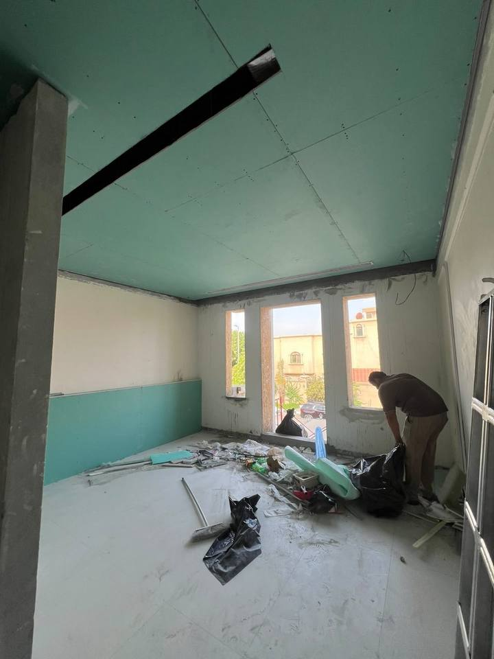
Recessed black magnetic track lighting channels integrated into moisture-resistant gypsum board ceilings in Qatif.

Minimalist interior hall in Dammam featuring flush linear magnetic track lighting, seamless gypsum ceiling, and matte Jotun wall finishes.
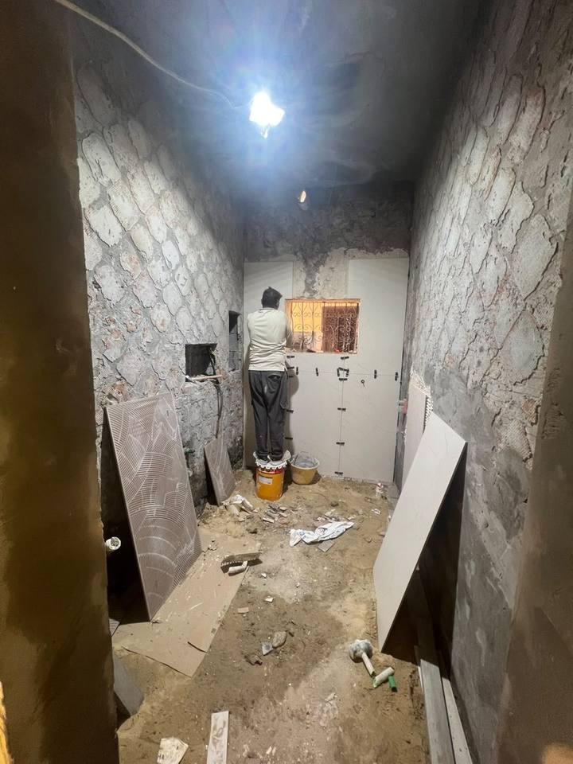
Complete removal of aging bathroom tiles and installation of new concealed cistern and thermal PPR plumbing lines in Jubail.
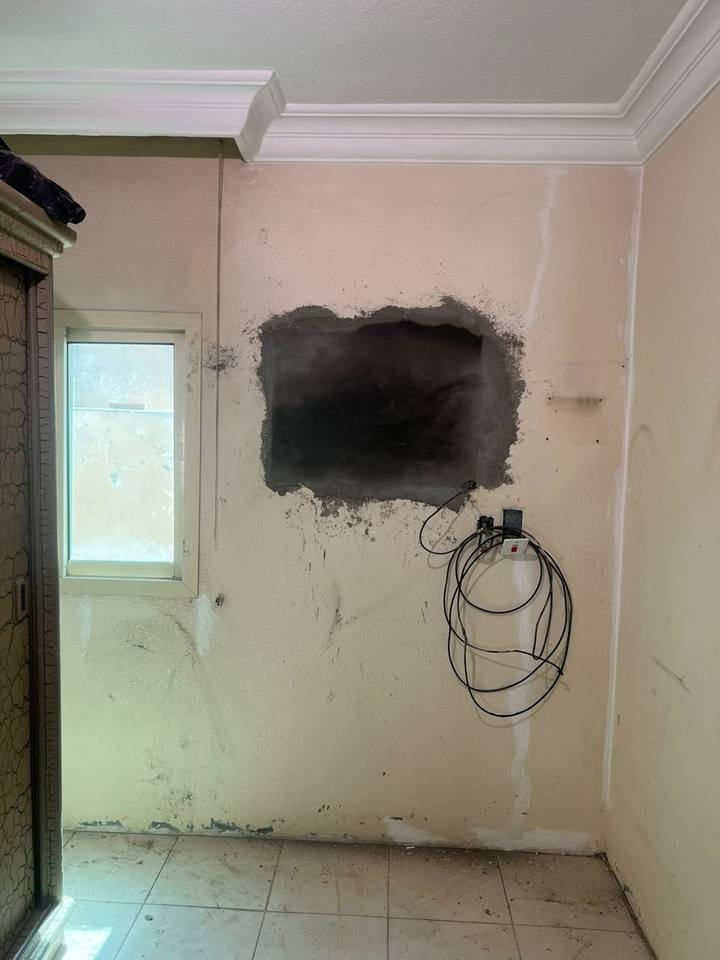
Electrical conduit upgrading, distribution box recessing, and cement plaster patching during an apartment renovation in Dammam.
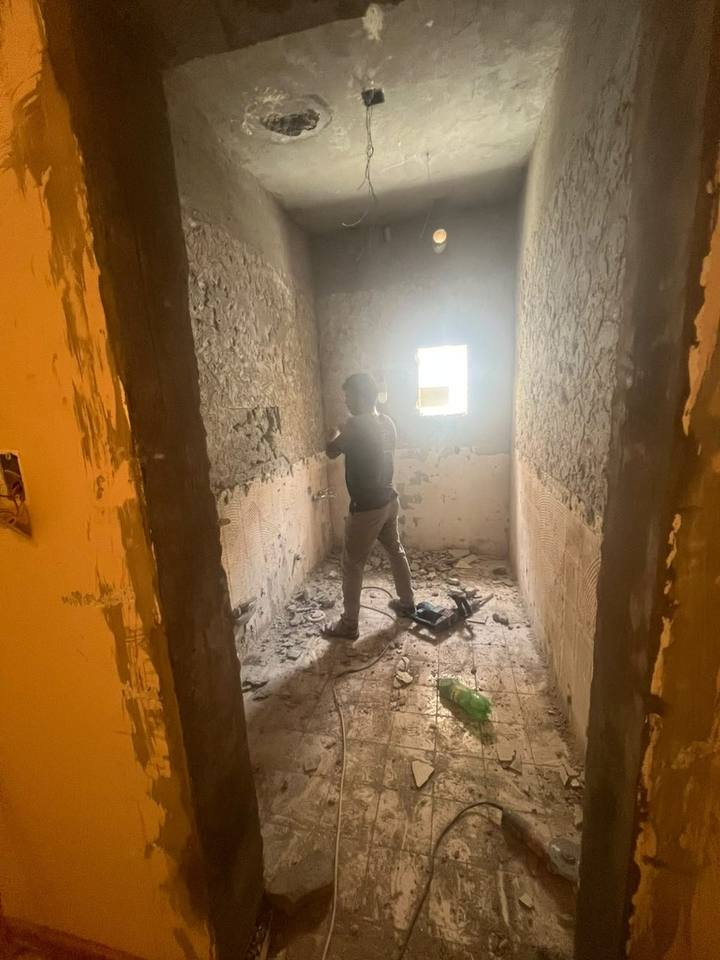
Substrate preparation and wall stripping for cement spatter-dash and two-coat waterproofing in a Khobar villa bathroom.
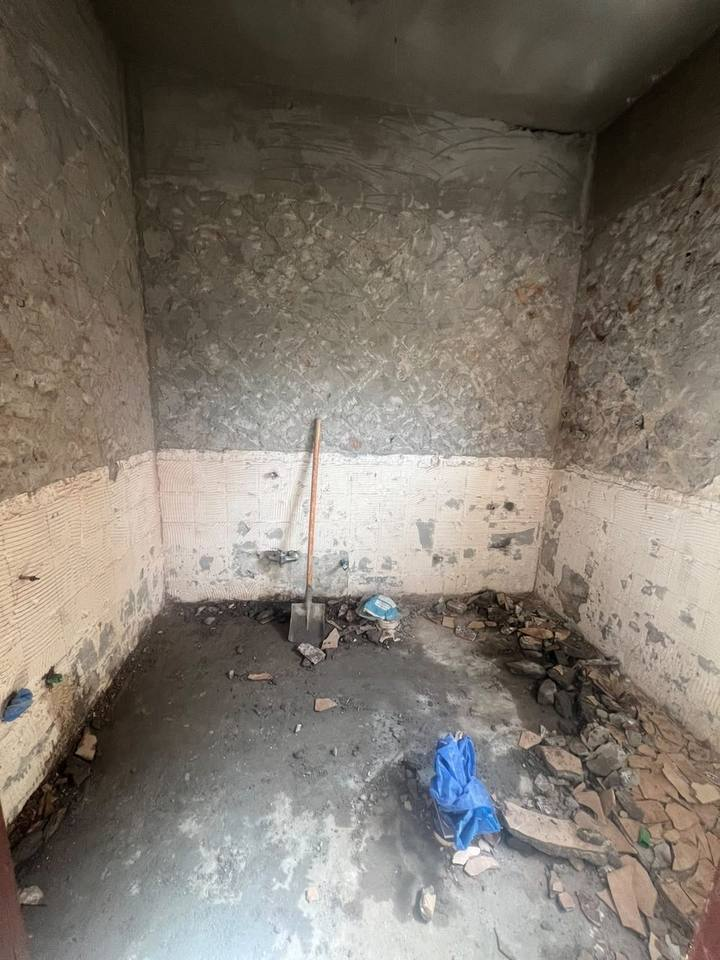
Old floor removal and laser-leveled screed preparation for installing 60x120cm porcelain tiles with Saveto adhesive in Qatif.
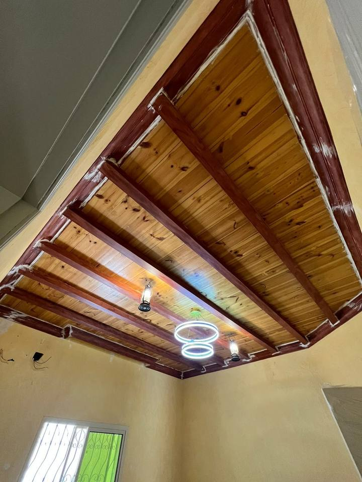
Moisture- and heat-resistant WPC and chipboard ceiling cladding delivering rich architectural warmth for a reception hall in Al-Ahsa.

On-site contracting crew stripping old wall tiles, clearing debris, and preparing rough-in plumbing in Dammam.
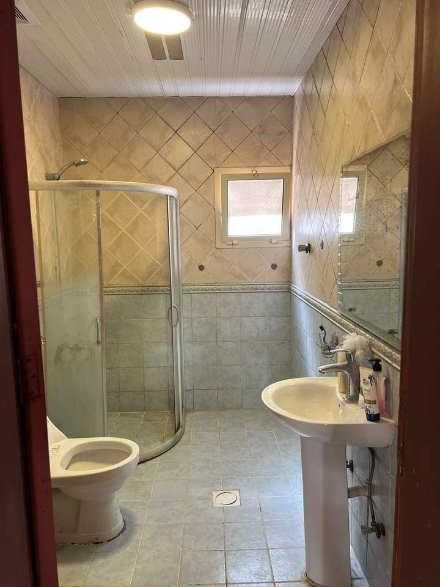
Completed turnkey bathroom renovation in Jubail featuring two-tone beige ceramic tiling, tempered glass shower enclosure, and new sanitary ware.

Moisture-resistant doorway framing, aluminum strip ceiling, and sanitary fixture installation completing a bathroom remodel in Jubail.

Jotun Fenomastic warm grey wall finish paired with balanced perimeter spotlighting in a furnished Dhahran living room.

Heavy-duty structural steel framing and weather-resistant cement board cladding for a high-ceiling commercial annex in Dammam.

Full exterior scaffolding setup for installing high-elevation cement board facade panels with fiberglass mesh joint reinforcement in Dammam.
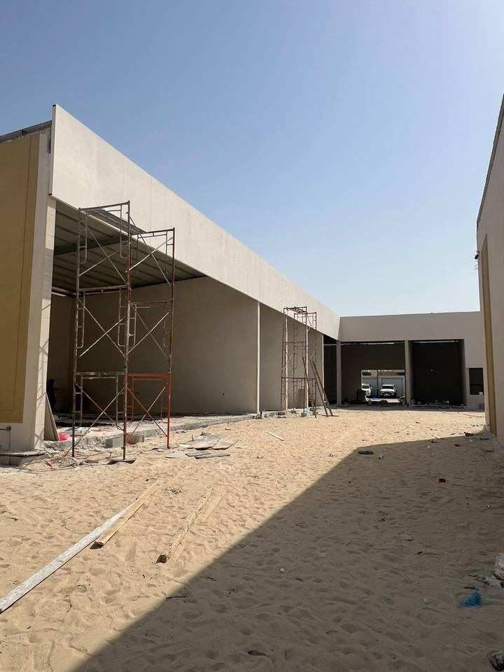
Turnkey structural steel and masonry construction for large commercial annexes and showrooms in Jubail.

Lightweight insulated upper-floor annex extension constructed with structural steel studs and exterior-grade cement board in Khobar.
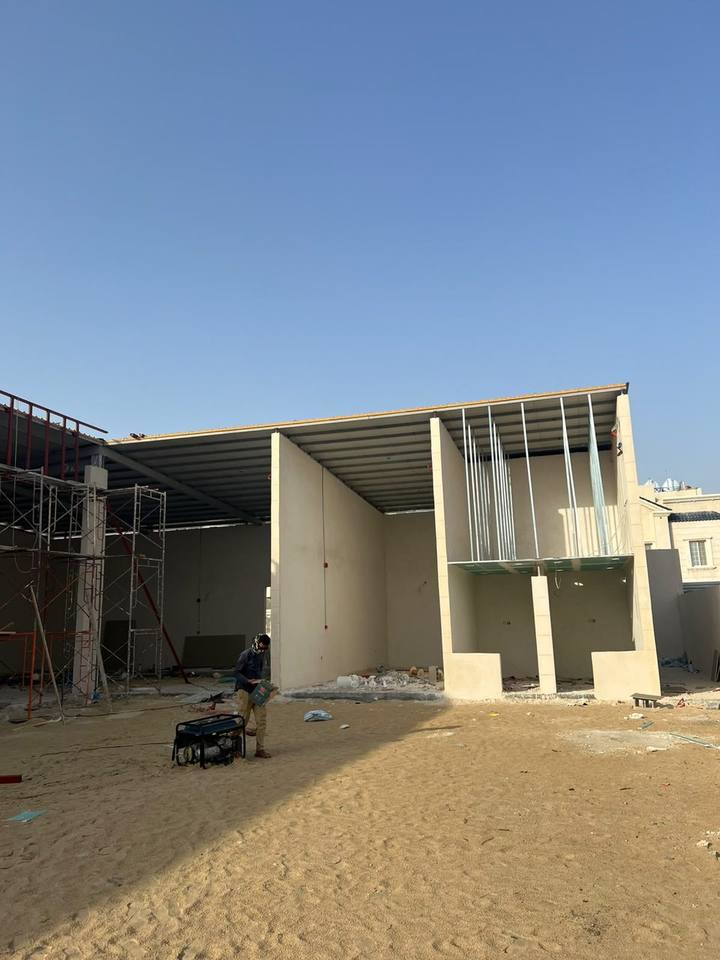
Double-height structural steel and masonry building expansion engineered to Saudi Building Code standards in Dammam.
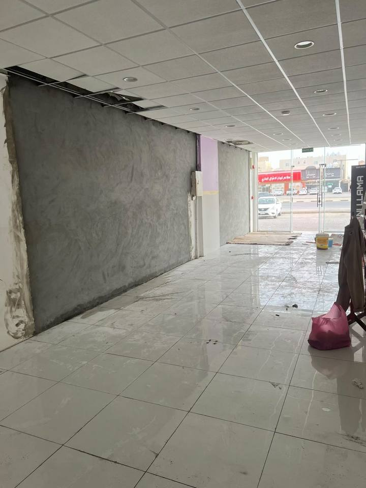
Interior cement plastering, acoustic suspended ceiling grid installation, and floor preparation for a commercial showroom in Khobar.

Foundation excavation, reinforced grade beam pouring, and insulated concrete block masonry for a 4x6m external majlis annex in Dammam.

Completed concrete block masonry walls and window lintels for a residential courtyard majlis annex in Dammam.

Welded pyramidal steel truss roof framing engineered to support insulated waterproofing layers and Spanish clay roof tiles in Khobar.
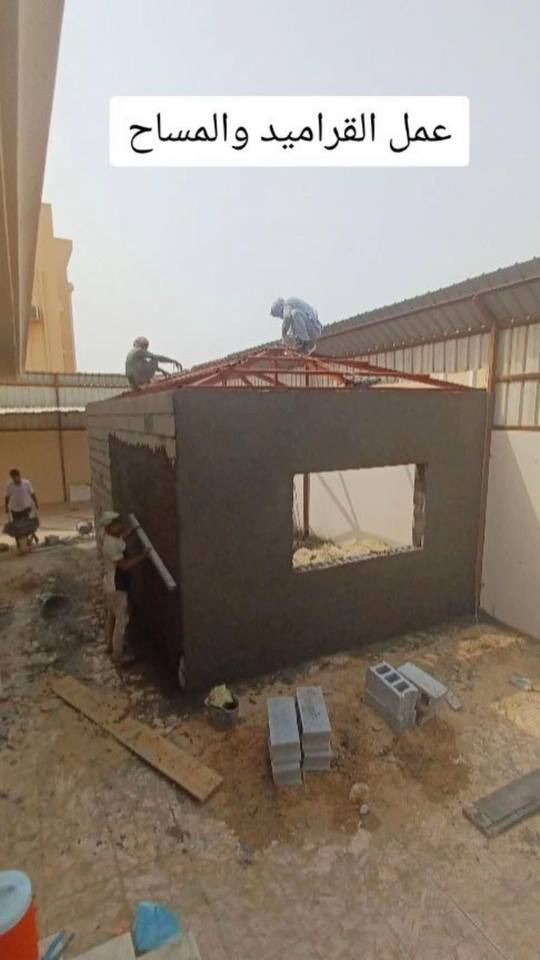
Plumb-leveled exterior cement plastering (masah) paired with red Spanish clay roof tile installation on a Khobar annex.
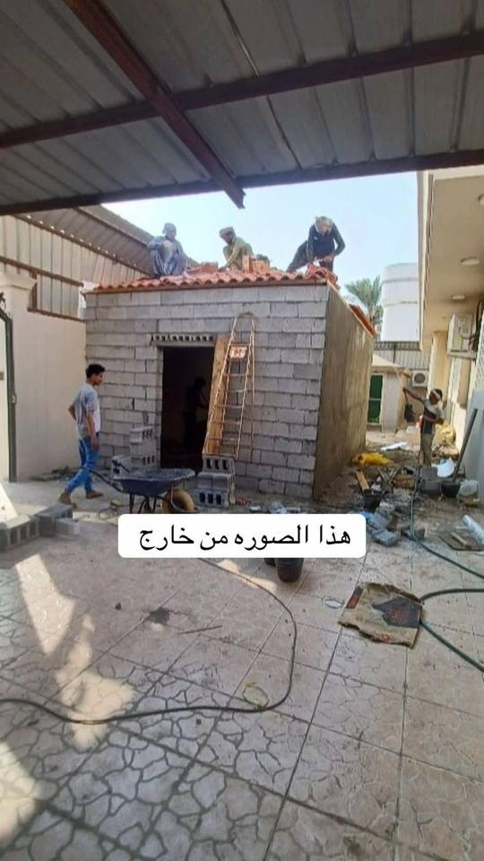
Installation of red clay qarmid roof tiles and ridge caps over a 5-layer thermal and waterproof membrane system in Qatif.
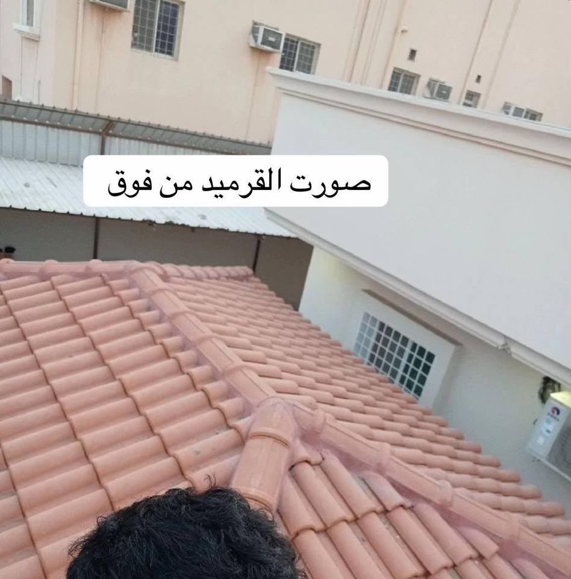
Close-up top inspection of interlocking red clay qarmid roof tiles sealed against rain, humidity, and coastal salinity in Dhahran.
Get a quote in minutes
Pick the service and city, add a few details — your request opens in WhatsApp ready to send. Final price is confirmed after the free inspection.